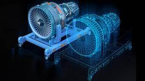

Un gemelo digital es una réplica virtual de algún producto donde este recibe datos en tiempo real y mediante una inteligencia artificial, cloud computing y machine learning se puede saber cómo piensa y actúa.
La función de un gemelo digital es el poder imitar a un objeto para después imitar su comportamiento, esto con el objetivo de saber como se esta desenvolviendo su contraparte física y poder registrar sus datos de manera remota. Otra cosa para lo que se emplea es para la creación y prueba de prototipos, donde se hace una simulación de como se cree que debería funcionar este nuevo invento.
Historia:
La idea del gemelo digital no es nueva. En 2002 en la Universidad de Michigan, Michael Grieves, ingeniero informático, mencionó durante una charla junto a John Vickers, director de Tecnología de la NASA, la posibilidad de crear representaciones digitales de sistemas físicos que tuvieran entidad por sí mismas. Ni dos décadas después, concretamente en 2018, la consultora Gartner situó a los digital twins como una de las diez tendencias tecnológicas de ese año.
Impacto:
Los gemelos digitales pueden replicar varios elementos del mundo real, desde piezas individuales de un equipo en una fábrica hasta instalaciones completas, como turbinas eólicas e incluso ciudades enteras. La tecnología de gemelos digitales permite supervisar el rendimiento de un activo, identificar posibles fallos y tomar decisiones mejor fundamentadas en cuanto al mantenimiento y el ciclo de vida.

Estadisticas:
El tamaño del mercado de gemelos digitales se estima en 19,09 mil millones de dólares en el año en curso. Se espera que alcance los 91,92 mil millones de dólares en cinco años, registrando una tasa compuesta anual del 36,94% durante el período previsto. Para simplificar el proceso de fabricación y ofrecer una variedad de enfoques innovadores para reducir costos, optimizar el mantenimiento, monitorear activos, reducir el tiempo de inactividad y crear nuevos productos vinculados, se espera que se transformen las soluciones tecnológicas gemelas.
Vision a futuro::
según una encuesta realizada en 2018 por McKinsey & Company[1] a empresas acerca de la adopción de Inteligencia Artificial, un 47% de los 2.135 participantes mencionan haberla incorporado en algún proceso de negocio, lo que supone un incremento significativo con respecto a un estudio similar realizado en 2017 donde sólo un 20% de participantes reportan usar este tipo de tecnología. La mayoría de participantes (58%) señalan que menos del 10% de la inversión digital está destinada al desarrollo de productos que incorporan IA, pero muchos de los encuestados (78%) tienen mucha confianza de que habrá un incremento en la inversión en IA en los próximos años. Así por ejemplo, un informe publicado por PWC[2] estima que en 2030 la contribución de la Inteligencia Artificial al mercado global será de unos 13.8 billones de euros.